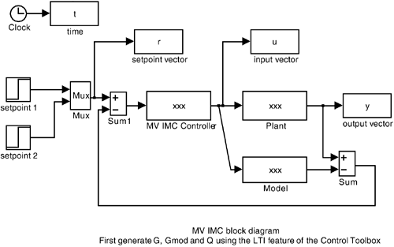

| [ Team LiB ] |
|
14.8 MATLAB tzero, svd, and LTI FunctionsThe MATLAB Control Toolbox has a routine (tzero) for calculating the transmission zeros of a multivariable model. MATLAB can also be used to perform a SVD analysis (using the function svd). Transmission Zero CalculationHere we illustrate the use of tzero by way of an example. Example 4.2, continuedOperating Point 1 (minimum phase) Consider first the minimum-phase operating point. First, set all of the individual matrix elements as follows: g11 = tf([2.6],[62 1]); g12 = tf([1.5],conv([62 1],[23 1])); g21 = tf([1.4],conv([30 1],[90 1])); g22 = tf([2.8],[90 1]); Then define the transfer function matrix
G = [g11 g12;g21 g22]
Transfer function from input 1 to output...
2.6
#1: --------
62 s + 1
1.4
#2: --------------------
2700 s^2 + 120 s + 1
Transfer function from input 2 to output...
1.5
#1: -------------------
1426 s^2 + 85 s + 1
2.8
#2: --------
90 s + 1
The command to evaluate transmission zeros is z = tzero(G) z = -0.01733947114395 -0.05947212305895 and we see that both zeros are in the left-half-plane, so the model inverse will be stable. Operating Point 2 (nonminimum phase) Consider now the nonminimum-phase operating point. Set all of the individual matrix elements as follows: g11 = tf([1.5],[63 1]); g12 = tf([2.5],conv([39 1],[63 1])); g21 = tf([2.5],conv([56 1],[91 1])); g22 = tf([1.6],[91 1]); Then define the transfer function matrix
G2 = [g11 g12;g21 g22]
Transfer function from input 1 to output...
1.5
#1: --------
63 s + 1
2.5
#2: --------------------
5096 s^2 + 147 s + 1
Transfer function from input 2 to output...
2.5
#1: --------------------
2457 s^2 + 102 s + 1
1.6
#2: --------
91 s + 1
and calculate the transmission zeros z2 = tzero(G2) z2 = 0.01300046557077 -0.05649863406894 The RHP (positive) zero indicates that the matrix inverse will be unstable. SVDHere we illustrate the use of svd to perform a SVD, by way of an example. Example 14.3, continuedThe MATLAB svd function is straightforward to use. First, enter the scaled G matrix, then issue the svd command, which yields the following results:
» G_scaled = [1.667 1.667;0.5 -0.5];
» [U,S,V] = svd(G_scaled)
U =
1.0000 0.0000
0.0000 -1.0000
S =
2.3575 0
0 0.7071
V =
0.7071 -0.7071
0.7071 0.7071
LTI Objects in SIMULINK Block DiagramsHere we illustrate the use of the LTI feature of the Control Toolbox to perform multivariable simulations. First, the process and controller objects are generated using the LTI tf (transfer function) command. Then the block diagram is constructed and the LTI objects from the Control Toolbox are placed in specific blocks on the diagram. Example 14.1, continuedHere, we use Example 14.1, at the nonminimum phase (system A) operating point, for illustration. First, define the process using the LTI objects.
% define the process
g11 = tf([1 3],[1 3 2]);
g12 = tf([2],[1 3 2]);
g21 = tf([3],[1 3 2])
g22 = tf([1],[1 3 2]);
G = [g11 g12;g21 g22];
%
% define the controller (L1 and L2 are the tuning parameters)
% set the L1 and L2 values before simulating the .mdl file
q11 = tf(-(2/3)*[0.5 1.5 1],[(1/3)*L1 ((1/3)+L1) 1]);
q12 = tf((4/3)*[0.5 1.5 1],conv([L2^2 2*L2 1],[(1/3) 1]));
q21 = tf(2*[0.5 1.5 1],[(1/3)*L1 (1/3)+L1 1]);
q22 = tf(-2*conv([0.5 1.5 1],[(1/3) 1]),conv([L2^2 2*L2 1],
[(1/3) 1]));
Q = [q11 q12;q21 q22];
Then, construct the .mdl diagram shown in Figure 14-15, where the multivariable (MV) IMC controller block contains the Q object, the plant block contains the G object and the model block is equal to the plant block for this (ideal) example. Figure 14-15. MV IMC block diagram. Set the tuning parameter values (L1 and L2) before running the simulation. For a setpoint change in output 1, the responses are shown in Figure 14-14. |
| [ Team LiB ] |
|